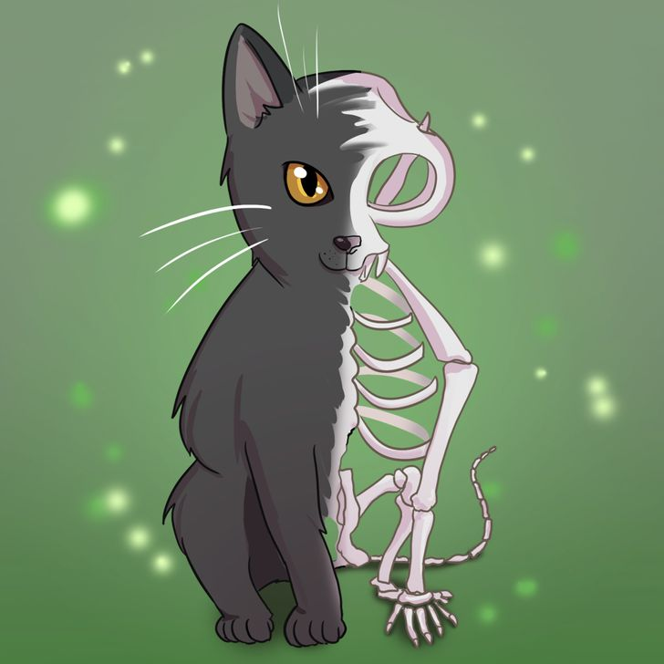

Если бы у меня был кот, его бы звали Cat of Sir Schrödinger, или, сокращённо - CSS
Я бы создал для него страничку на Википедии, которая выглядела бы примерно так ↓
Визуальные параметры моего кота были бы следующие:

У моего кота был бы собственный небольшой домик с весёлыми игрушками
А так он мог бы выглядеть вне своего жилища
Итак, подведём итоги и сделаем выводы о моём несуществующем коте: